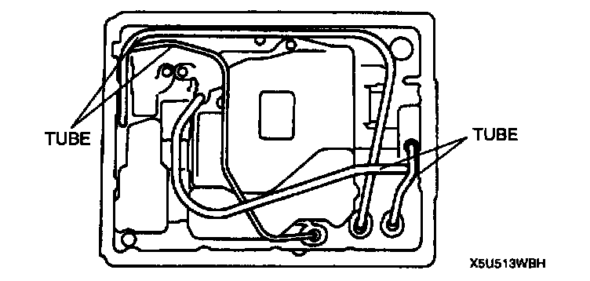
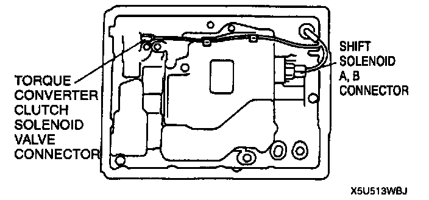
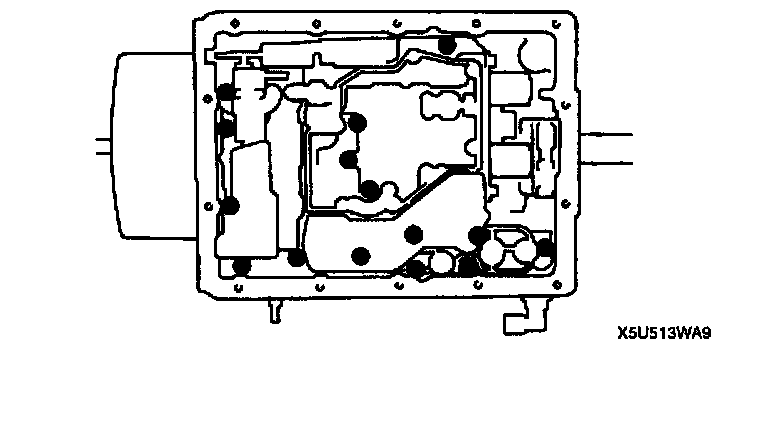
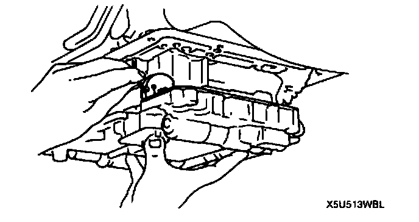
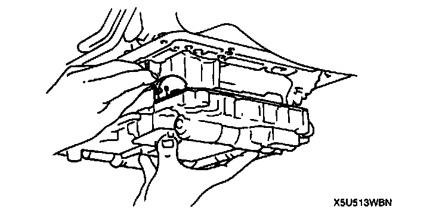
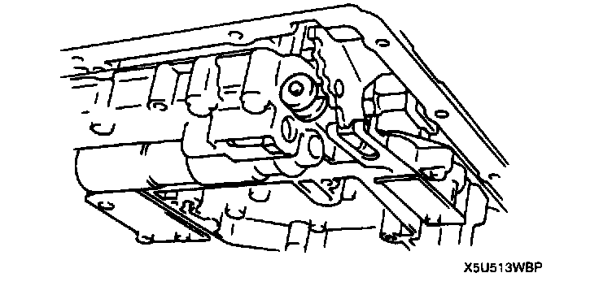
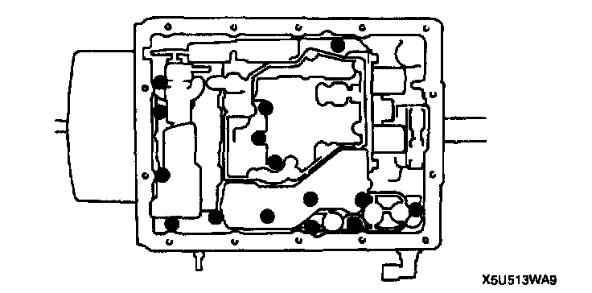
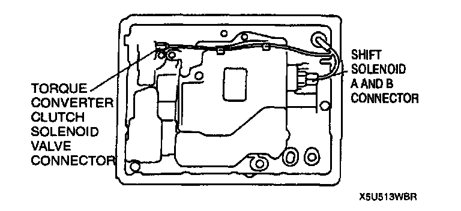

Valve Body: Service and Repair
CONTROL VALVE BODY REMOVAL/INSTALLATIONOn-Vehicle Removal
1. Clean the transmission exterior thoroughly with a steam cleaner or cleaning solvents.
2. Disconnect the negative battery cable.
3. Drain the ATF.
4. Remove the oil pan and gasket.
Caution: To prevent deformation of the tube, remove the tube by pulling both ends up.

5. Remove the tube.

6. Disconnect shift solenoid A, B. and torque converter clutch solenoid valve connector.
7. Remove the oil strainer.

8. Remove the control valve body installation bolts.

9. Remove the nipple of the throttle cable from the throttle cam.
10. Remove the control valve body.
11. Remove the accumulator spring.
On-Vehicle Installation
1. Set the accumulator springs into the control valve body as shown.

2. Install the nipple of the throttle cable to the throttle cam

3. Verify that the manual valve and manual shaft are assembled correctly.

4. Install the control valve body.
Tightening torque 7.9 - 11.7 Nm (80 - 120 kgf-cm, 70 - 104 inch lbs.)
5. Install the oil strainer.
Tightening torque 5.0 - 5.8 Nm (50 - 60 kgf-cm, 44 - 52 inch lbs.)

6. Connect shift solenoid A, B. and torque converter clutch solenoid valve connector.
7. Install the tube.
8. Install the new gasket and oil pan.
Tightening torque 4.0 - 4.9 Nm (40 - 50 kgf-cm, 35 - 43 inch lbs.)
9. Add ATF to the specified level.
10. Carry out the mechanical test.
11. Carry out the road test.